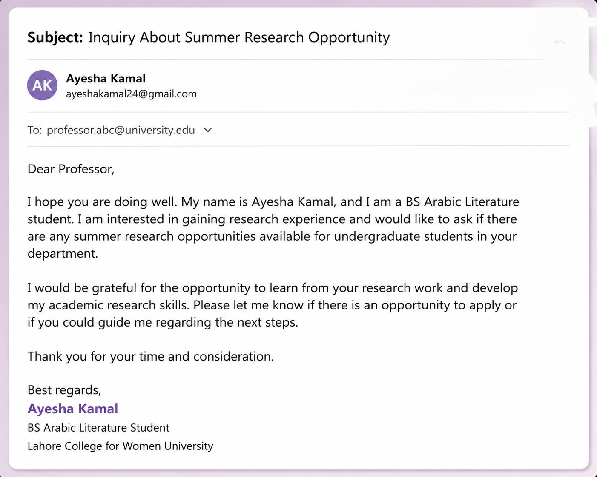
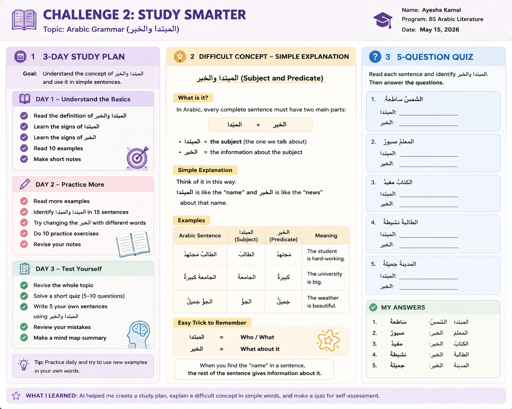
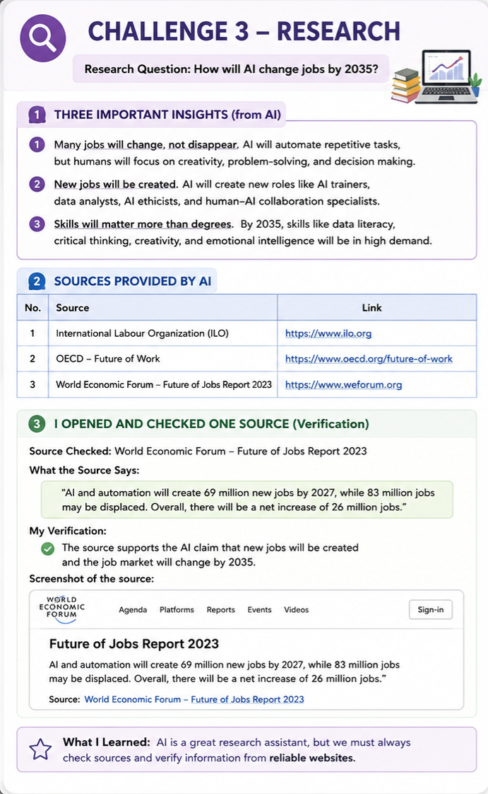
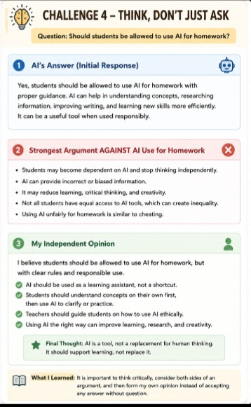
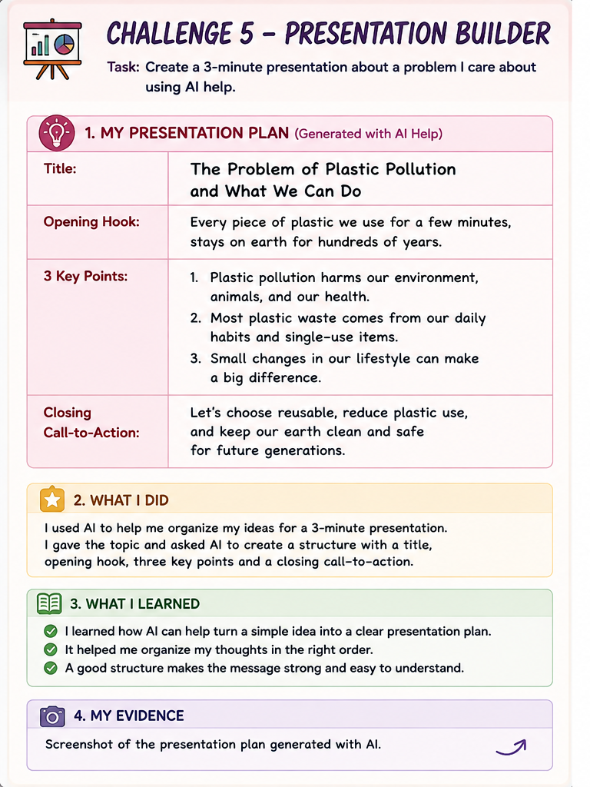
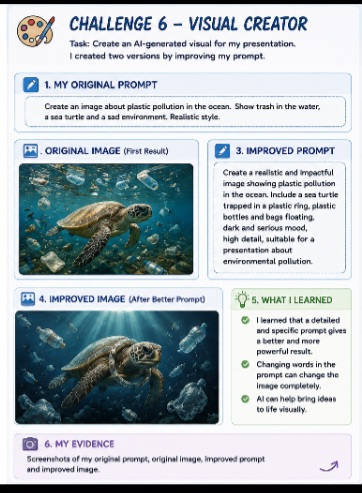
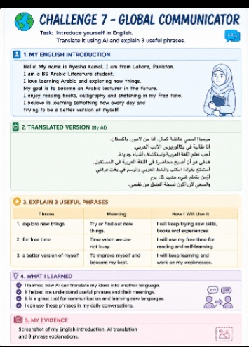
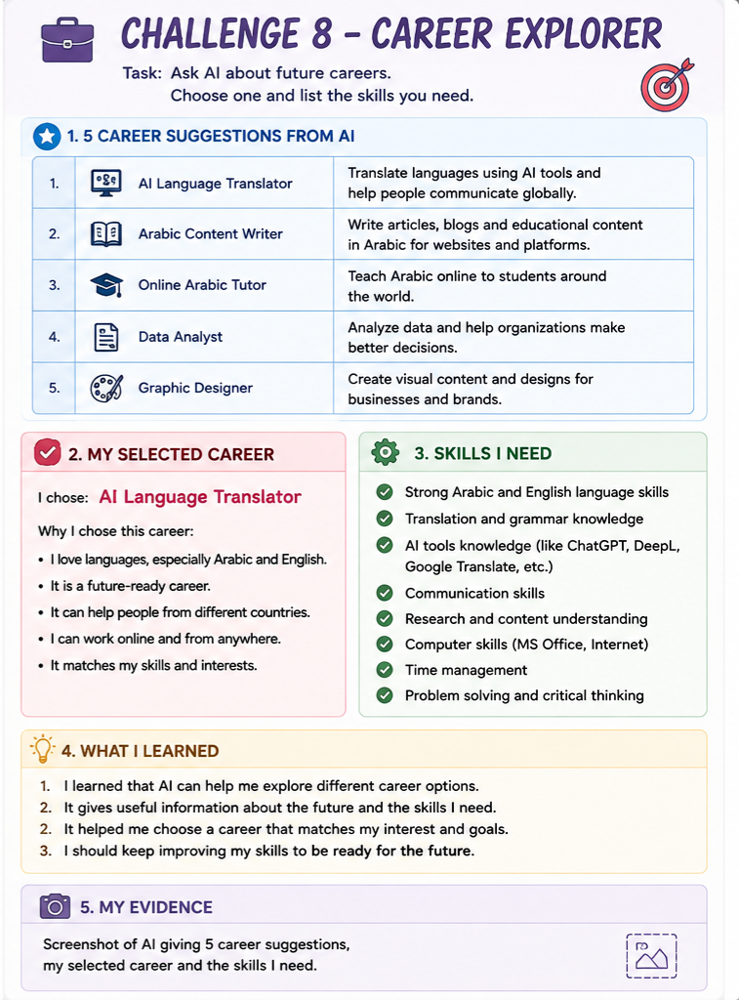
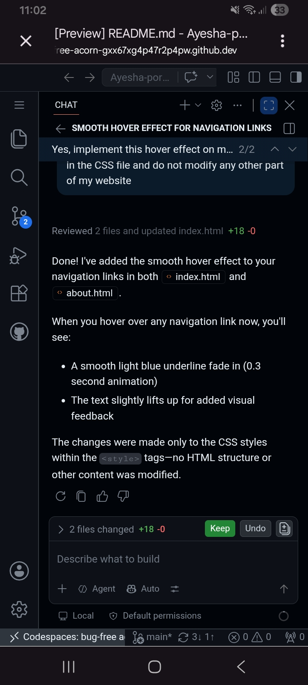
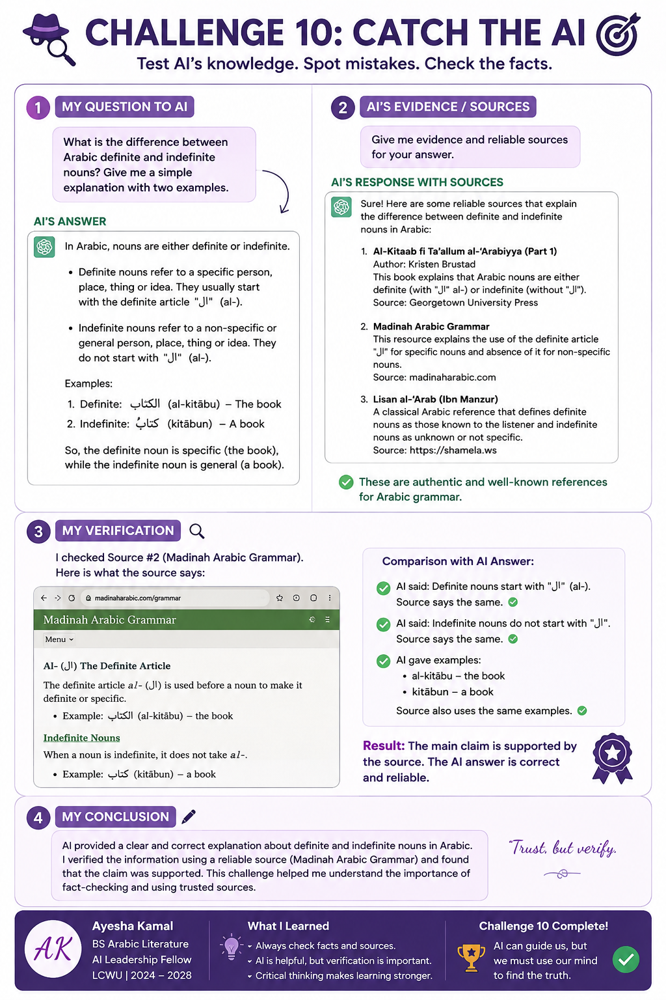

Welcome to my digital portfolio. This website presents my learning, projects, AI activities, challenges, skills, reflections, and achievements from my six-week AI Leadership Fellowship.
I have documented my journey from the first class to the final graduation showcase.
Explore My JourneyA short introduction to my academic background, interests, and skills.
I am Ayesha Kamal, a BS Arabic Literature student at Lahore College for Women University.
I am interested in Arabic language, learning new digital skills, creative work, and using technology to improve my academic and professional abilities.
My 10 AI Superpowers — practical activities and evidence completed during my AI Leadership Fellowship.
During this fellowship, I learned how AI can support students in writing, studying, learning, creativity, communication, problem-solving, career planning, and digital skills.
I also learned that AI should support my own thinking rather than replace it. I should understand, review, and verify information before using it.
I used AI to create a short professional email and then reviewed and personalized it so that it sounded natural and appropriate for communication with a university professor.

I explored how AI can help a student understand difficult topics, organize revision, create questions, and prepare for an examination in a more structured way.

I selected a topic that I was genuinely interested in learning. I used AI to understand the topic step by step, asked questions, and checked the information instead of simply copying the answer.

I explored a real-life problem and considered how AI could help find practical solutions. This activity helped me think about technology as a problem-solving tool.

I used AI as a creative assistant to generate ideas and improve my creative work while keeping my own ideas and decisions at the center of the process.

I explored how AI can help improve communication by making messages clearer, more organized, professional, and suitable for different situations.

I explored future career possibilities and the skills that can help me prepare for a changing workplace. This helped me connect my current studies with future opportunities.

I practiced using digital tools and learned how technology can help me organize information, present my work, and build a stronger online portfolio.

I used AI to review my portfolio website and suggest a simple improvement. I then implemented a smooth hover effect on the navigation links to make the website more interactive and polished.

For my final challenge, I reflected on the AI skills I developed and how I can continue using them responsibly in my studies, creative work, communication, and future career.

A summary of my learning and progress from the first class to the final week.
I learned the basic concept of Artificial Intelligence and explored how AI can support students in everyday academic tasks.
I explored AI tools and thought about how AI can help with studies, research, communication, and future careers.
I started organizing my skills, projects, goals, and learning experiences into a professional digital portfolio.
I identified real-life problems where AI could provide useful support and practiced thinking about practical solutions.
I completed practical AI challenges covering writing, studying, creativity, communication, career planning, and digital skills.
I reviewed my complete journey, reflected on what I learned, and prepared my final graduation showcase.
The main skills and lessons I gained during my AI Leadership journey.
I developed a better understanding of AI and its practical uses in student life.
I learned how AI can help organize and improve professional writing while keeping my own voice.
I learned ways to use AI for explanations, revision, questions, and structured learning.
I practiced identifying problems and thinking about how technology could help solve them.
I learned to use AI as a creative support tool while keeping my own ideas and decisions important.
I gained more confidence in digital tools, GitHub, websites, and online portfolio development.
This six-week AI Leadership Fellowship changed the way I think about Artificial Intelligence. At the beginning, I mainly saw AI as a tool for getting answers. During the fellowship, I learned that AI can also be used for learning, research, creativity, communication, problem-solving, and career planning.
One of my biggest lessons was that using AI responsibly requires my own thinking. I should not blindly copy information. I should ask better questions, review the results, verify important information, and then make my own decisions.
I also became more confident in using digital tools and presenting my work online. I want to continue developing these skills and use them in my academic journey and future career.
This portfolio represents not only the tasks I completed, but also the progress I made throughout the fellowship.
From my first AI activity to my final reflection, this portfolio captures my complete six-week learning journey.
I started this journey with curiosity and a willingness to learn. I completed practical challenges, explored AI tools, built digital skills, improved my portfolio, and reflected on responsible AI use.
I am proud of the progress I made and excited to continue learning and developing my skills.
Thank you for taking the time to explore my learning journey.
Back to Top